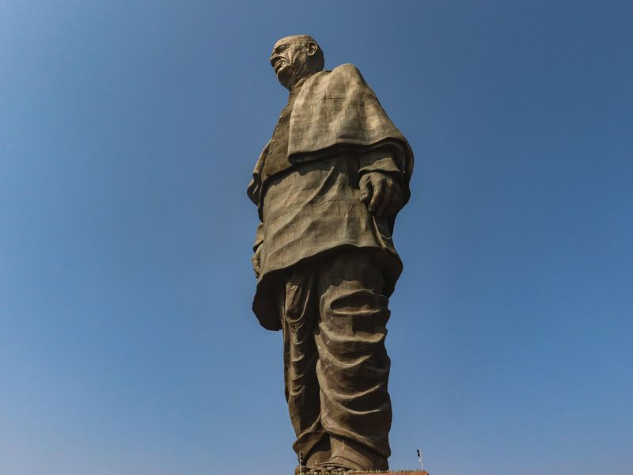

GrabCut is an image segmentation method based on graph cuts.
Starting with a user-specified bounding box around the object to be segmented, the algorithm estimates the color distribution of the target object and that of the background using a Gaussian mixture model. This is used to construct a Markov random field over the pixel labels, with an energy function that prefers connected regions having the same label, and running a graph cut based optimization to infer their values. As this estimate is likely to be more accurate than the original, taken from the bounding box, this two-step procedure is repeated until convergence.
We will try to Remove Background for this image :

#Import Necessary Libraries
import numpy as np
import cv2
# Read Image
img = cv2.imread('statue.jpg')
# Create Mask
mask = np.zeros(img.shape[:2], np.uint8)
# Create zero-filled foreground and background
bgdModel = np.zeros((1,65),np.float64)
fgdModel = np.zeros((1,65),np.float64)
# Define a crop image rectangle size
rect = (250,50,421,600)
# GrabCut algorithm specifying the empty models and mask
cv2.grabCut(img, mask, rect, bgdModel, fgdModel,5, cv2.GC_INIT_WITH_RECT)
# The values, 0 and 2, will be converted into zeros, and 1-3 into ones, and stored into mask2
mask2 = np.where((mask==2)|(mask==0),0,1).astype('uint8')
img = img*mask2[:,:,np.newaxis]
# Store image as Grabcut.jpg
cv2.imwrite("Grabcut.jpg", img)
Output Image will be: